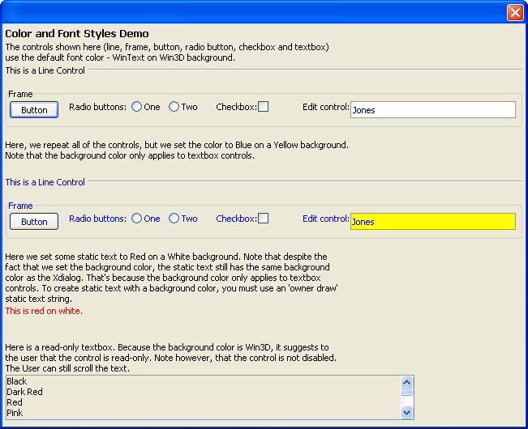

{COLOR}
Syntax
{COLOR= Foreground_Color ON Background_Color }
|
Argument |
Type |
Description |
|
Foreground_Color |
C |
The name of an Alpha Five color (see A5.COLOR_ENUM()). Defines the text color of a control. |
|
Background_Color |
C |
The name of an Alpha Five color (see A5.COLOR_ENUM()). Defines the background color of a textbox control. |
Description
The {COLOR} command allows you to set the foreground color for the following controls on an Xdialog:
Textbox
Frame
Line
Radio Button
Checkbox
Buttons
In addition, the command sets the background color for textbox controls.
Limitations
Desktop applications only
Example
The script below creates this dialog.

|
dim lastname as c = "Jones" %dlg%) |
See Also